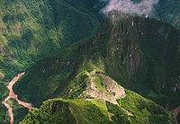

Esta antigua ciudad inca es uno de los tesoros más preciados de Perú. Fue construida a mediados del siglo XV y se cree que fue una de las residencias del noveno inca del Tahuantinsuyo, Pachacútec, aunque en ella también están los restos de un santuario. Su nombre significa montaña vieja, y hace alusión al lugar donde se ubica, a unos 2453 msnm, en un premonitorio rocoso entre Machu Picchu y Huayna Picchu. Es frecuente que durante la subida los viajeros sientan el mal de altura.
Actualmente, esta joya inca es uno de los focos turísticos del país. Los viajeros se acercan hasta Aguas Calientes para iniciar la ruta inca que Hiram Bingham, el profesor de Yale, popularizó a principios del siglo XX. El Santuario histórico de Machu Picchu está considerado como una de las siete nuevas maravillas del mundo moderno y ha sido declarado como patrimonio de la humanidad en 1983.
Geografia
El conjunto del sitio arqueológico ha sido construido sobre el batolito de Vilcabamba, compuesto de rocas intrusivas que datan aproximadamente de unos 250 millones de años, intrusivos Permo-Triásicos principalmente de granito blanco a grisáceo, cortado por algunas vetas de tonalitas y talcesquistos.
Machu Picchu es considerada, al mismo tiempo, una obra maestra de la arquitectura y la ingeniería. Sus peculiares características arquitectónicas y paisajísticas, y el velo de misterio que ha tejido a su alrededor buena parte de la literatura publicada sobre el sitio, lo han convertido en uno de los destinos turísticos más populares del planeta, así como una de las 7° maravillas del mundo
Zona Agricola
Los andenes (terrazas de cultivo), de Machu Picchu lucen como grandes escalones construidos
sobre la ladera. Son estructuras formadas por un muro de piedra y un relleno de diferentes
capas
de material (piedras grandes, piedras menores, cascajo, arcilla y tierra de cultivo) que
facilitan el drenaje, evitando que el agua se empoce en ellos (téngase en cuenta la gran
pluviosidad de la zona) y se desmorone su estructura. Este tipo de construcción permitió que
se
cultivara sobre ellos hasta la primera década del siglo XX. Otros andenes de menor ancho se
encuentran en la parte baja de Machu Picchu, alrededor de toda la ciudad. Su función no era
agrícola sino servir como muros de contención.
Cinco grandes construcciones se ubican sobre los andenes al este del camino incaico que
llega a
Machu Picchu desde el sur. Fueron utilizados como colcas o almacenes. Al oeste del camino se
encuentran otros dos grandes conjuntos de andenes: unos concéntricos de corte semicircular y
otros rectos.
Alrededores y Caminos incaicos
Machu Picchu, como parte integrante de una región de gran movimiento económico en tiempos de
Pachacútec, estaba integrado a la red de caminos incaicos del Imperio. Usando estas vías se
puede, hasta hoy, acceder a otros complejos incaicos cercanos que revisten gran interés. Al
norte, por las bifurcaciones del camino de Huayna Picchu se puede llegar al llamado Templo
de la Luna o a la cima de la montaña donde existen construcciones incaicas. Al oeste está el
camino que lleva a Intipata y pasa por el famoso "puente removible". Otro camino, por el que
ascendió Agustín Lizárraga, lleva hasta el río y a San Miguel.
Al sur, sin embargo, se encuentra la ruta más conocida y la principal de todas, que es la
ruta de trekking más popular del Perú. El camino inca a Machu Picchu es un recorrido de
entre tres y cuatro días que atraviesa lo que, a fines del siglo XV, fue la principal ruta
de acceso a Machu Picchu, que empezaba en el complejo de Llactapata y pasaba por los centros
ceremoniales de Sayacmarca, Phuyupatamarca y Wiñay Wayna, para terminar en el tambo de
Intipunku, la "garita" de ingreso a los dominios de Machu Picchu y punto final del
recorrido.
Sector Hanan
Templo Sol
Se accede a él por una portada de doble jamba, que permanecía cerrada (hay restos de un mecanismo de seguridad). La edificación principal es conocida como "Torreón", de bloques finamente labrados
Pirámide Intihuatana
Se trata de una colina cuyos flancos fueron convertidos en terrazas, tomando la forma de una gran pirámide de base poligonal. Incluye dos largas escaleras de acceso, al norte y al sur, siendo esta última especialmente interesante por estar en una largo trecho tallada en una sola roca.